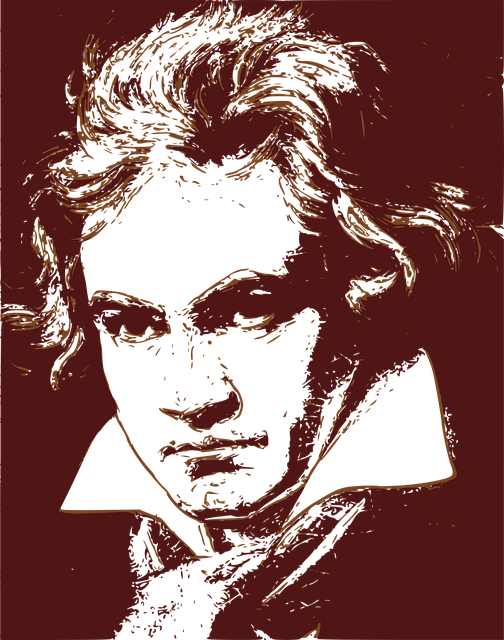

Ludwing Van Beethoven
El Hombre que aprendió a escuchar sin oir.

Acontecimientos más importantes en la vida de Beethoven.
- 1770 - Nació en Bonn, Alemania.
- 1778 - Realizó su primera actuación en público.
- 1782 - Se convierte en discípulo de Christian G. Neefe.
- 1783 - Publica su primera obra, las Variaciones sobre una marcha de Dressler.
- 1787 - Visita Viena, donde recibe alabanzas de Mozart. Muere su madre y regresa a Bonn.
- 1790 - Primer contacto con Haydn.
- 1792 - Fallece su padre. Se instala definitivamente en Viena.
- 1794 - Primeros síntomas de su sordera.
- 1801 - Compone la sonata para piano Claro de Luna, dedicada a la condesa Giulietta Guicciardi, con la que sin embargo no llegaría a casarse.
- 1805 - Estrena la Sinfonía nº 3 Heroica, cuya dedicatoria a Napoleón suprimiría posteriormente. Fracaso de la primera versión de su ópera Fidelio.
- 1808 - Estreno de las sinfonías quinta y sexta (Pastoral).
- 1812 - Encuentro en Bohemia con Goethe. Compone las sinfonías séptima y octava.
- 1813 - Éxito económico y popular con su obra Victoria de Wellington.
- 1814 - Su sordera es ya total y sólo puede comunicarse por escrito. Gran éxito en el estreno de la versión definitiva de Fidelio.
- 1824 - Termina de componer la novena sinfonía, cuyo estreno dirige en su última aparición como director.
- 1826 - Enferma de neumonía.
- 1827 - Muere el 26 de marzo en Viena.
"La música debe hacer brotar sangre del corazón del hombre, y lágrimas de los ojos de la mujer".
Ludwing Van Beethoven.